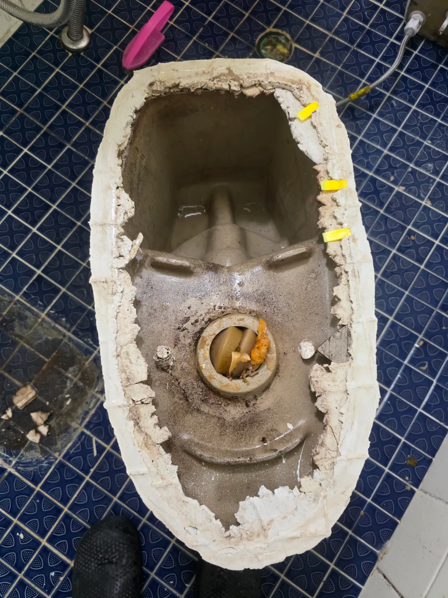
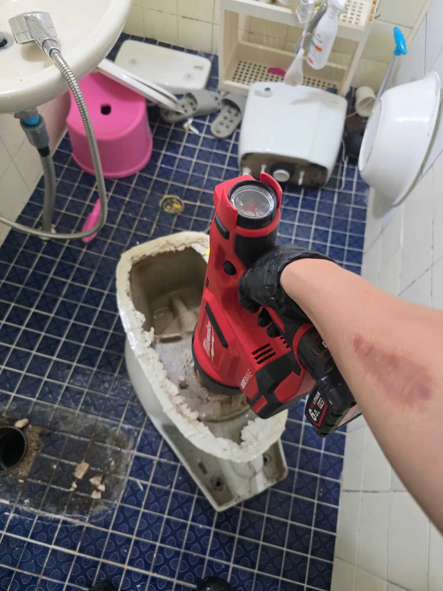

마포구 합정동 변기막힘, 현장 도착 후 진단
마포구 합정동 변기막힘 요청을 접수한 신라건축설비는 변기 탈거 공구와 에어건을 준비해 신속하게 현장으로 출동했습니다. 숙련된 변기막힘 전문 기술자가 물내림 상태와 수위 변화를 확인한 결과, 일반적인 휴지 막힘과 달리 단단한 이물질이 변기 트랩에 걸린 증상에 가까웠습니다. 외부에서 무리하게 관통 작업을 반복하면 이물질이 더 깊이 끼거나 변기 내부가 손상될 수 있어, 변기를 직접 탈거해 변기 자체의 막힘과 하부 오수관 문제를 구분하기로 했습니다.
1단계: 증상 확인과 필요한 장비 작업
먼저 급수 밸브를 잠그고 변기 물탱크와 도기 내부의 물을 정리한 뒤, 주변 시설물이 손상되지 않도록 변기를 조심스럽게 탈거했습니다. 변기를 들어내 바닥 오수관 입구를 점검하고 하부 배출구를 통해 내부 트랩 상태를 확인했습니다. 그 결과 변기 자체의 굴곡진 배수 통로에 물에 녹지 않는 생활 이물질이 걸려 있는 모습이 확인됐습니다. 이물질의 위치와 방향을 확인한 후 변기 도기를 손상시키지 않으면서 밖으로 밀어낼 수 있도록 작업 방향을 설정했습니다.

2단계: 원인 구간 처리와 정상 작동 확인
탈거한 변기의 하부 배출구에 밀워키 충전식 에어건을 밀착시킨 뒤 압력을 단계적으로 조절하며 내부 트랩에 공기를 주입했습니다. 한 번에 과도한 압력을 가하지 않고 이물질의 움직임을 확인하면서 반복적으로 작업해 트랩에 단단히 걸려 있던 이물질을 배출했습니다. 이어 변기 내부로 충분한 물을 흘려보내 잔존 이물질과 막힘이 남아 있지 않은지 확인했습니다. 바닥 오수관 입구도 함께 점검한 후 변기를 원래 위치에 재설치하고 여러 차례 물을 내려 배수 속도와 수위, 하부 누수 여부를 확인했습니다.

작업 결과와 재발 방지 안내
에어건 작업으로 변기 트랩을 막고 있던 생활 이물질을 제거한 뒤 물이 차오르거나 정체되지 않고 빠르게 배출되는 것을 확인했습니다. 변기에는 휴지 외에 물티슈, 위생용품, 플라스틱 용기나 각종 생활용품을 넣지 않아야 합니다. 단단한 물건이 빠진 뒤 변기막힘이 발생했다면 뚫어뻥이나 관통기를 계속 사용하지 않는 것이 좋습니다. 이물질이 더 깊이 들어가면 변기 탈거뿐 아니라 하부 오수관 작업까지 필요해질 수 있으므로 정확한 위치를 구분해 처리해야 합니다.
신라건축설비는 마포구 합정동을 비롯한 서울 전 지역과 경기권에 신속하게 출동하여 변기막힘·싱크대막힘·하수구막힘을 전문적으로 해결합니다. 변기막힘의 원인과 위치에 따라 석션, 관통, 에어건, 변기 탈거 및 오수관 점검 등 적합한 공법을 선택합니다. 점검 과정에서 하부 배관이나 공용 오수관 문제가 발견되면 배관 내시경검사와 고압세척, 배관 보수·교체공사까지 자체적으로 대응할 수 있습니다.
최종 조치: 변기를 안전하게 탈거해 내부 트랩과 바닥 오수관을 분리 점검했습니다. 변기 하부 배출구 방향에서 에어건으로 압력을 가해 트랩에 걸린 생활 이물질을 밀어내 제거하고, 변기 내부 통수 확인 후 재설치와 반복 물내림 검사로 정상 배수를 확인했습니다.
현장 방문 전 확인하는 비용과 작업 범위
신라건축설비는 현장 증상과 배관 구조를 확인한 뒤 필요한 작업과 예상 비용을 안내합니다. 단순 관통으로 해결되는지, 배관내시경·석션·고압세척 또는 변기 탈거가 필요한지는 현장 상태에 따라 달라집니다. 출장비와 야간 작업비, 추가 장비 비용이 발생할 수 있는 경우 작업 전에 먼저 설명하고 동의를 받은 범위에서 진행합니다.
업체를 선택할 때 확인할 사항
무조건적인 ‘0원’ 표현보다 실제 작업 범위, 추가 비용 조건, 사용 장비와 사후 대응 기준을 확인하는 것이 중요합니다. 해결되지 않았을 때의 비용 기준과 작업 후 동일 증상 발생 시 점검 범위를 사전에 문의해두면 불필요한 분쟁을 줄일 수 있습니다.
마포구 변기막힘 자주 묻는 질문
변기를 꼭 탈거해야 하나요?
변기 물을 내리면 수위가 올라오면서 정상적으로 빠지지 않았으며, 잠시 기다리면 물만 천천히 내려가는 증상이 반복됐습니다. 단순한 휴지 막힘보다 단단한 이물질이 변기 내부에 걸렸을 가능성이 높은 상태였습니다.처럼 증상이 나타나더라도 원인은 현장마다 다를 수 있습니다. 장비와 배관 구조를 확인한 뒤 필요한 작업 범위를 안내합니다.
작업 전 비용을 알 수 있나요?
작업 전 증상과 현장 여건을 확인해 예상 범위와 비용을 먼저 안내합니다. 변기 탈거, 장비 추가 투입 또는 공용배관 작업이 필요한 경우 고객 동의 없이 임의로 진행하지 않습니다.
같은 증상이 다시 생기면 어떻게 하나요?
완료 후 정상 작동을 함께 확인하고 작업 범위에 따른 사후 안내를 드립니다. 동일 증상이 반복되면 현장 기록을 기준으로 원인을 다시 점검합니다.
변기막힘 서울·경기 출동지역
신라건축설비는 마포구 합정동 현장을 포함해 서울 25개 구와 경기도 31개 시·군의 배관 문제를 상담합니다. 현장 거리와 기사 배정 상황에 따라 출동 가능 여부를 먼저 안내드립니다.
서울 전 지역
강남구 · 강동구 · 강북구 · 강서구 · 관악구 · 광진구 · 구로구 · 금천구 · 노원구 · 도봉구 · 동대문구 · 동작구 · 마포구 · 서대문구 · 서초구 · 성동구 · 성북구 · 송파구 · 양천구 · 영등포구 · 용산구 · 은평구 · 종로구 · 중구 · 중랑구
경기도 주요 출동지역
수원시 · 용인시 · 고양시 · 화성시 · 성남시 · 부천시 · 남양주시 · 안산시 · 평택시 · 안양시 · 시흥시 · 파주시 · 김포시 · 의정부시 · 광주시 · 하남시 · 광명시 · 군포시 · 양주시 · 오산시 · 이천시 · 안성시 · 구리시 · 의왕시 · 포천시 · 양평군 · 여주시 · 동두천시 · 과천시 · 가평군 · 연천군